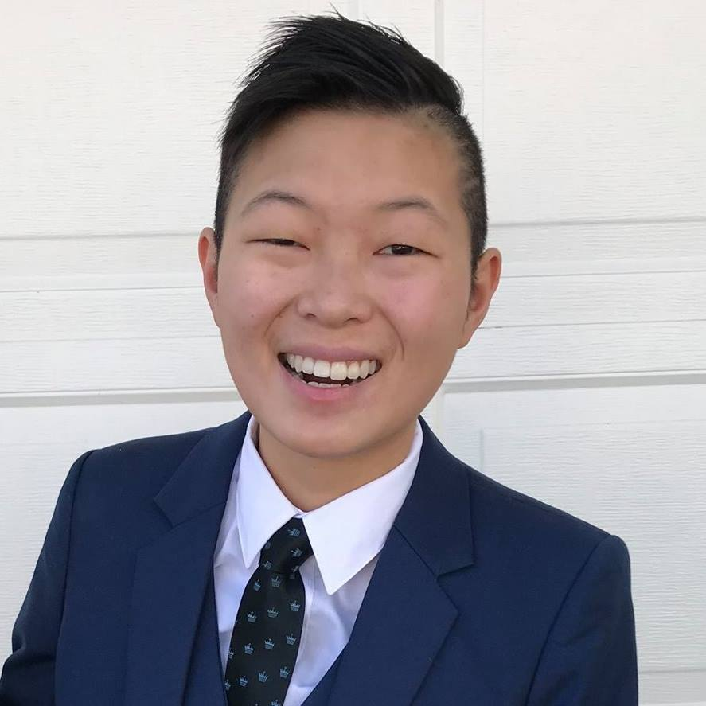

Hello! My name is Maura. I consider myself to be a pragmatist who works to increase productivity and efficiency in your favor.
In May 2019, I'll graduate from The University of Missouri with a Bachelors of Journalism in Convergence Media, which is a fancy way of saying that I can tackle any multimedia project you throw at me!
Graduation was in some ways thrust upon me. Between December 2018 and late January 2019, my date went from December 2019 to August 2019 to May 2019, in that order. I'm a bit blessed and cursed, my major sets me up for a wide variety of career paths, but I have no clue what I want to do. But hey, life's an adventure and does anyone really know what they want to be when they grow up?
Anyways, enjoy my website, and I hope our paths cross soon!
Cheers, MH